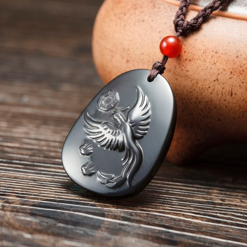

Tips：农历生肖运势即将进入2018年狗年，属龙2018年运势及运程抢先看，新年早开运，狗年求吉祥！
属龙2017年运势及运程详解
出生年份：2012、2000、1988、1976、1964、1952年
属龙的年龄查询：属龙的人今年多大
属龙人2017年事业运势
子玉风水大师点评：耐心工作 切勿自满
生肖属龙的人，进入2017年丁酉鸡年，今年因为命宫中凶星不多，而又有吉星拱照，故此流年运势尚算畅顺；虽然并非大吉大利，但若能懂得把握时机，今年的收获仍将颇为可观！工作方面的进展，因有「天厄」凶星照命，故此将会出现不少困阻；幸而这些困阻不难解决，故此若能小心从事，今年仍可望马到功成！属龙的人今年事业成功的秘诀，是要有耐心！缺乏耐心今年的事业成果将极为有限。因有「紫微」吉星照命，倘若专心一意，读书考试将可金榜题名，打工或担任公职的，将可望脱颖而出，步步高升！但因为同时有一颗「暴败」凶星出现，警示属龙的人切勿被胜利冲昏头脑，以免得意忘形而突然失手落败，那便前功尽废了！全年的工作运势，上半年的运势较为畅旺，应好好把握时机奋发向上；秋季的三个月运势较为反复，处事必须加倍小心谨慎；年尾的三个月运势又将转趋畅旺。今年工作畅顺的月份，是农历正月、三月、六月、九月、十月以及十二月；在以上这几个月朋间，应好好把握时机来奋发向上！今年工作进展欠佳的月份，是农历二月、七月及八月。

属龙人2017年财运精准预测
子玉风水大师点评：财源广进 投资有利
属龙的人，今年的财运相当畅旺，正财收入丰足无忧，而且还会有不少意外收入，财源广进！若要投资创业或置业，今年的春季及冬季正是大好时机！但请紧记各项投资均需量力而为。横财较为反复，所以临到甜头便要及时收手，以免最终得不偿失。秋季财星破损，理财必须特别小心谨慎，以免被人暗中侵吞钱财，或堕入金钱陷阱，人财两失。财运畅旺的月份，是农历正月、三月、六月、十月及十二月。今年财运较低迷的月份，是农历二月、七月、八月及十一月；四月慎防受骗破财，七月慎防被人侵吞钱财，十一月及十二月慎防盗劫之灾。
属龙人2017年健康运势
子玉风水大师点评：起居定时 远离烟酒
属龙的人，今年健康并无大碍，但却小病频仍，故此必须尽量保持正常的饮食起居习惯，切勿暴饮暴食，并切勿废寝忘餐，以免身心俱疲而酝酿成大病。因有「六害」凶星照命，这警示今年易受烟酒及麻醉品毒害身心，所以应尽量远离烟酒，而毒品更是绝不可沾惹。今年春夏之间，易受传染病困扰，必须及早注意清洁卫生，并尽量避开传染性高的区域。今年健康易出问题的月份，是农历的二月、八月及十月。农历二月慎防传染，六月慎防酒色伤身，七月则必须密切注意交通安全。
属龙人2017年爱情婚姻运势
子玉风水大师点评：情投意合 喜气洋洋
属龙的人，今年的感情发展称心如愿，情投意合，多姿多彩！年初很可能碰到意中人，应好好珍惜时机来培养情苗，将可望结出情花爱果。但切勿因太沉迷于爱河之中而耽误事业发展，否则很快便会自尝苦果。今年家有喜事，喜气洋洋。今年感情发展良好的月份，是农历正月、三月、六月、九月及十二月，好好把握时机来培养情苗。感情易出问题的月份，是农历五月、七月以及十一月。
属龙的爱情婚姻配对：属龙的和什么属相最配
属龙的青少年2017年运势
今年才思敏捷，若能专心向学，心无旁驾，定可脱颖而出，金榜题名！但切勿沾沾自喜而故步自封，以免因而自误前程。健康平平，慎防因为疾病缠身而耽误学业进展。今年感情发展称心如意，甜蜜温馨。
属龙的女性2017年运势
今年家人之间会有许多不同意见，必须尽量化解矛盾误会，以免出现难以修补的裂痕。财运尚可，但需慎防堕入金钱陷阱。属龙的少女，今年很有机会碰到一位合意的对象，倘能细心培养情苗，将可望结出情花爱果。
属龙人2017年开运吉祥物

属龙人2017年吉凶方位
属龙的人今年的三个生旺吉方，是东方、西北及西南；若能把睡床、工作台和沙发摆放在屋内这三个方位上，便可符合这生肖今年的风水趋吉之道，有助改善流年运程。倘若未能如此，最少亦要把这三种最重要的家具避开西方及南方，以符合避凶之道。以上所提出的吉凶方位，是纯以生肖属龙的人来计算；而与其它十二生肖无关，请勿混淆。
属龙人2017年幸运色
属龙的人今年的生旺颜色是黄、紫以及红色；若能利用这些颜色来布置房间、或配衬衣物，这会对改善流年运程大有帮助！属龙的人今年忌灰色及黑色，最好能尽量避免使用。
属龙人2017年幸运数字
属龙的人今年的生旺数字是4及9。
抢先关注：属龙的人2018年运程
不同龙年出生的属龙人2017年运势详解
2012年属龙的人2017年运程
2012年出生的人，今年容易吸收新知识，家长宜多加循循善诱。健康平平，小病颇仍，密切注意饮食卫生。
2000年属龙的人2017年运程
2000年出生的人，今年才思敏捷，若能专心向学，定可脱颖而出！感情如鱼得水，但需防因而耽误学业。
1988年属龙的人2017年运程
1988年出生的人，今年工作得心应手，步步高升，但切勿得意忘形。将会遇到意中人，可望结出情花爱果。88年属龙人今年若要开运解灾，增旺运势，可佩戴本站周易专家团队精心设计的增庆堂属龙2017吉祥物吊坠，该圣品图案为一只凤凰守护着八卦灵符，采用高档彩虹眼黑曜石精雕而成，寓意您在2017年功名腾达，一鸣冲天，多得贵人提携，事业红红火火，爱情和谐如意，遇事逢凶化吉，百邪不犯。亦可同时佩戴增庆堂属龙六合贵人手链，更具功效。开车人士，可在爱车挂上一串增庆堂吉祥莲花琉璃挂件，以保行车安全。
1976年属龙的人2017年运程
1976年出生的人，今年工作虽有困阻，但只要小心从事，便可望马到功成。财运畅旺，但投资需量力而为。76年属龙人今年若要开运解灾，增旺运势，可佩戴本站周易专家团队精心设计的增庆堂属龙2017吉祥物吊坠，该圣品图案为一只凤凰守护着八卦灵符，采用高档彩虹眼黑曜石精雕而成，寓意您在2017年功名腾达，一鸣冲天，多得贵人提携，事业红红火火，爱情和谐如意，遇事逢凶化吉，百邪不犯。亦可同时佩戴增庆堂属龙六合贵人手链，更具功效。开车人士，可在爱车挂上一串增庆堂吉祥莲花琉璃挂件，以保行车安全。
1964年属龙的人2017年运程
1964年出生的人，今年财运颇佳，但横财勿贪，以免得不偿失！尽量少沾烟酒，以免健康受损而后患无穷。64年属龙人今年若要开运解灾，增旺运势，可佩戴本站周易专家团队精心设计的增庆堂属龙2017吉祥物吊坠，该圣品图案为一只凤凰守护着八卦灵符，采用高档彩虹眼黑曜石精雕而成，寓意您在2017年功名腾达，一鸣冲天，多得贵人提携，事业红红火火，爱情和谐如意，遇事逢凶化吉，百邪不犯。亦可同时佩戴增庆堂属龙六合贵人手链，更具功效。开车人士，可在爱车挂上一串增庆堂吉祥莲花琉璃挂件，以保行车安全。
1952年属龙的人2017年运程
1952年出生的人，今年家人之间会有诸多矛盾，必须及早化解。正财收人丰足，但需防堕入金钱陷阱。
属龙人2017年全年每月运势
农历正月 公历2017年2月3日至3月5日
本月称心如意，迎春接福
属龙的人今年吉星拱照，大吉大利！年初这个月运势畅旺，气势如虹。工作得心应手，事半功倍；而且很可能有贵人指引提携，如虎添翼！在这段期间最重要的，是要把握时机争取主动出击，务求先发制人，捷足先登！切忌犹疑不决，否则便将会后悔莫及。财星高照，正财收入丰足无虞，而且还会有不少意外的收获，但必须懂得及时收手。自有奇逢应早春，很有机会碰到意中人，称心如意，好好珍惜时机来培养情苗。
农历二月 公历2017年3月6日至4月4日
本月运势崎岖，步步为营
因有「天厄」凶星照命，这个月的运势急剧逆转，工作诸多困阻，而且人事纷争迭起，故此必须谋定而后动，步步为营，以免一败涂地！在这段期间最重要的，是在默默耕耘之余，必须尽量谦虚低调，努力改善人缘，以免被人孤立而独木难支。财星破损，财运一落千丈，正财及横财俱不宜憧憬，投资及赌博均需暂时忍手，以免焦头烂额。健康欠佳，易受病魔侵扰，除了密切注意起居饮食卫生，并需慎防传染。
农历三月 公历2017年4月5日至5月5日
本月春风得意，乘时奋进
这个月因有「龙德」吉星照命，故此晦气一扫而空，晴空万里任翱翔，正是乘时奋发的大好时机！灵感涌现，创作力特别丰富，而且得道多助，可望脱颖而出！在这段期间最重要的，是必须专心工作，心无旁骛地向着目标迈进；切勿受人唆摆而三心两意，自误前程。财运大有起色，若要投资创业，这个月将大有可为！横财先盛后衰，月尾反复向下，故此切勿沉迷赌博。这个月春风得意，感情生活多姿多彩。
农历四月 公历2017年5月6日至6月5日
本月以诚待人，实事求是
因为命宫中吉凶星混杂，这个月的运势浮沉反复，时好时坏。工作进展往往节外生枝，而且会有小人从中作梗，以致好事多磨！在这段期间最重要的，是必须以诚待人，争取别人的认同及支持，以免势孤力弱！并必须面对现实，实事求是。财运似是而非，各项投资必须量力而为，切勿超出自己的经济能力，以免泥足深陷！此外，并需慎防受骗破财。健康并无大碍，但出门必须密切注意安全，尽量远离险地。
农历五月 公历2017年6月6日至7月7日
本月镜花水月，难以捉摸
这个月的运势依然反复，幸而月中开始便会迂回向上，渐入佳境。工作环境多变，而且人事复杂，前景暧昧不明朗，难以捉摸！在这段期间最重要的，是凡事需三思而行，必须先看清楚形势，然后才好决定进退取舍！并需带眼识人，以免被人出卖。这个月感情有如镜花水月，疑患疑真，以致患得患失而情绪低落；请紧记必须随缘发展，切勿被情所困。财运依然反复，暂时不适宜作重大投资，更切勿孤注一掷。
农历六月 公历2017年7月8日至8月7日
本月福星高照，喜气洋洋
这个月因有福星高照，故可逢凶化吉；工作困阻将一一消除，而且困扰多时的人事纷争亦将烟消云散！在这段期间最重要的，是要顺着大势所趋去发展，自然事半功倍，水到渠成！切勿逆势而行，以免自招败辱。这个月喜气洋洋，家有喜事；而且易与异性擦出感情火花，情投意合，有望结出情花爱果。财星高照，正财及横财俱有所获，但切忌贪得无厌。健康大有起色，但切成暴饮暴食，并需慎防酒色伤身。
农历七月 公历2017年8月8日至9月7日
本月强敌环伺，慎防侵吞
因有「暴败」凶星出现在命宫中，这个月的运势变得崎岖不平，故此千万不可轻举妄动，以免一失足便难再翻身。工作压力沉重，而且强敌环伺，形势恶劣！在这段期间最重要的是暂时宜守不宜攻，采取守势来保存实力，直等到有利时机才再发挥出来！财星破损，钱财易泄难聚；除了理财需加倍小心之外，并需慎防被人侵吞钱财，以致空无所有。感情易起风波，要尽量避免恶言相向。月中需密切注意交通安全。
农历八月 公历2017年9月8日至10月8日
本月小人作梗，低调免祸
这个月的运势每下愈况，因有「六害」凶星照命，故此容易招惹小人，非但工作进展因而诸多阻滞，而且还很可能断送事业前途，故此切勿掉以轻心！在这期间最重要的，是必须敬小人而远之，远离是非圈；并需尽量保持低调，以免招人妒忌而惹祸。财运依然低沉不振，钱财易泄，必须严格量入为出，以免出现经济危机！并需慎防堕入金钱陷阱。这个月健康欠佳，身心俱疲，必须尽量多休养睡眠，以免积劳成疾。
农历九月 公历2017年10月9日至11月7日
本月雨过天青，渐入佳境
这个月的运势虽然并非大吉大利，但阴霾尽散，有如雨过天青，气象一新！工作困阻消除，而人事纷争亦逐渐平息，业务重新走上正轨！在这地段期间最重要的，是处事必须有耐心，循序渐进，便自然会渐入佳境！千万不可揠苗助长，心急反而会自乱阵脚。财运略有起色，正财收入尚可，但横财则切勿贪求，以免因贪而变贫；并需尽快清缴欠单，以免惹起不少麻烦。这个月感情出现转机，好好珍惜这段情缘。
农历十月 公历2017年11月8日至12月7日
本月贵人指引，青云直上
因有「紫微」吉星照命，这个月的运势有如日正中天，气势如虹；虽然偶有困阻，亦可势如破竹，马到功成，而且遗会有贵人扶持！在这段期间最重要的，是要打铁趁热，及时把握时机专心发展，将可脱颖而出，有加薪升职之喜！但切勿太招摇，以免招惹小人妒忌。财运大有起色，投资创业或购买物业均大有可为！可惜横财先盛后衰，月尾便会盛极而衰，必须懂得及时收手。这个月人缘良好，社交应酬左右逢源。
农历十一月 公历2017年12月8日至2018年1月5日
本月抛开成见，集思广益
这个月的运势略为回落，工作方面出现不少困阻；幸而这些困阻不难解决，若能小心从事，将不会出现大问题，对工作进展不会构成重大阻碍！在这段期间最重要的，是要保持冷静，切勿因志得意满而故步自封，以免被对手后来居上，那便前功尽废。财运平平，正财及横财俱不宜强求；并需小心保管财物，以防盗窃之灾。这个月情绪容易低落，郁郁寡欢，必须尽量打醒精神，放开怀抱，切勿钻入牛角尖而不能自拔。
农历十二月(辛丑月)公历2018年1月6日至2月3日
本月实事求是，力争上游
属龙的人今年运势畅顺，年尾这个月因为吉星拱照，故此大吉大利；工作得心应手，而且获得同事鼎力支持，正是力争上游的大好时机！在这期间最重要的，是必须实事求是，切勿被胜利冲昏头脑，以免得意忘形而大意失荆州。财星高照，财运亨通，正财及横财俱会大有所获！但需记紧钱财不可露眼，以免财多惹盗。健康良好，身心康泰，但千万不可沾染麻醉性毒品，以免乐极生悲。感情大有进展，甜蜜温馨。
2018年运程十二生肖运势：属龙2018年运势及运程
读过此篇文章的网友还读过：
☑ 属猴的人2017年运程
☑ 属马的人2017年运程
☑ 属狗的人2017年运程
☑ 属羊的人2017年运程
☑ 属蛇的人2017年运程
☑ 属鸡的人2017年运程